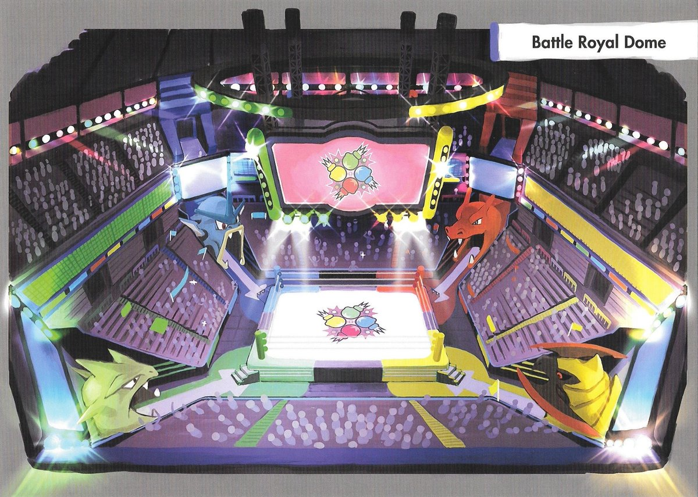

LANDMARKS IN ALOLA REGION!
Click on the Image title for Description!
|
Melemele Island |
Akala Island |
Poni Island |
Ulaùla Island |
Aether Paradise |
|
Malie City |
Seafolk Village |
Iki Town |

Battle Royal Dome |

Heahea Beach |
MELEMELE ISLAND
Melemele Island's real-life counterpart is the Hawaiian island of Oahu. Golden yellow is the island's official color and the ʻIlima is its official flower. Melemele Island features landmarks such as the Ten Carat Hill, Pokemon School, Iki Town, Mahalo Trail and Ruins of Conflict. The island people believe in it's Island Deity: Tapu Koko and Island Captain Hala.
Aerial View of Melemele Island
AKALA ISLAND
Akala Island's real-life counterpart is the Hawaiian island of Maui. Pink is the island's official color. Out of all of Alola's islands, Akala Island has the most island challenge trials to complete, with a total of four, including Olivia's grand trial. Some famous landmarks in the island are Lush Jungle, Hano Grand Resort, Battle Royal Dome and the Ruins of Life. This island is protected by it's deity Tapu Lele and Island Captain Olivia.
Aerial View of Akala Island
PONI ISLAND
Poni Island's real-life counterpart is the Hawaiian island of Kauai. Purple is the island's official color. This is the only one of Alola's four main islands to lack any traditionally numbered routes. Aside from the frequent reuse of the proper noun 'Poni', this is the only one of Alola's four main islands that doesn't feature a landmark or settlement with a Hawaiian name. Some famous landmarks in this island are Seafolk Village, Battle Tree, Poni Beach and Ancient Poni Path. This island is protected by it's deity Tapu Fini and Island Captain Hapu.
Aerial View of Poni Island
Ulaùla Island
Ula'ula Island's real-life counterpart is the Hawaiian island of Hawaii. Red is the island's official color. Since "ʻUlaʻula is Hawaiian" for red. Some famous landmarks in this island are Malie City and its Garden, Haina Desert, Mount Hokulani and its Observatory, and stationed near the mountain as well is the Region's Pokemon League. This island is protected by it's deity Tapu Bulu and Island Captain Nanu.
Aerial View of Ulaùla Island
Aether Paradise
Aether Paradise is a very large floating structure that serves as an artificial island located in the middle of the Alola region, near Akala Island. It was created by the Aether Foundation to serve as a base for their research. The research island facility boast with many research laboratories as well as a conservation area where Pokémon can be protected from people wishing harm. It runs a jamming signal that prevents that prevents Pokémon being captured within it.
Aerial View of Aether Paradise
Malie City
Malie City is a coastal city situated on Ula'ula Island of the Alola region. Its architecture is heavily influenced by designs from the Johto region. Malie City is the host of the famous Malie Garden designed by people who moved to Alola from Johto. As such, it sports a very Johto-like outlook, with a tower similar to the Bell Tower in Ecruteak City standing at one of its corners.
Concept Art of Malie City
Seafolk Village
Seafolk Village is a location on Poni Island of the Alola region. It connects to the Poni Wilds in the north and also provides access to Exeggutor Island has and the Ruins of Hope. Captain Mina's houseboat is located here, acting as the primary location of her trial. Boats in this area resemble Pokemon and the place is always a teeming seafood market.
Seafolk Village at Day showing Pokemon shaped boats
Iki Town
"An old town where traditions have been passed on for generations. The villagers here are close with Tapu Koko." Iki is a town on Melemele Island of the Alola region. It is where Island Kahuna Hala lives, and is the place where the Alola tour starts. Known for its town square where Pokemon are put a test through battles.
Iki Town at Night
Battle Royal Dome
Battle Royal Dome is a location on Akala Island in Alola, located on Royal Avenue. It is the venue for all Battle Royal matches. The arena where Battle Royal matches are conducted has four corners: red, blue, green, and yellow. Each corner has an entrance shaped like a Pokémon's head: the red corner is shaped like Charizard, the blue corner is shaped like Gyarados, the green corner is shaped like Tyranitar, and the yellow corner is shaped like Haxorus.
Battle Royal Dome Arena
Heahea Beach
Heahea Beach is a location on Akala Island in Alola, located west of Heahea City. It serves as the Akala Surf Spot for Mantine Surf. Aside from surfing oppurtinities, the area also boasts of wild water type pokemon. From this point, you may reach other surf spots by riding a Mantine. The two additional surf spots in Alola are Big Wave Beach and Ula'ula Beach.
Heahea Beach teeming with Wild Pokemon